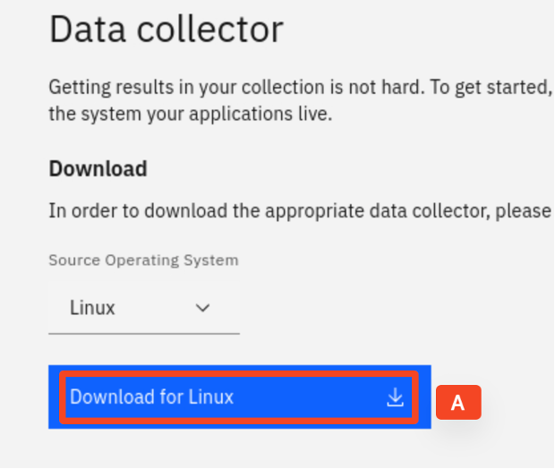
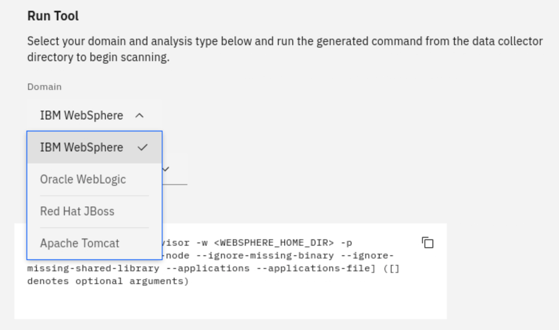
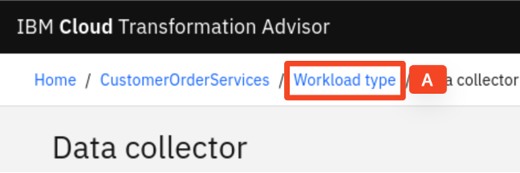
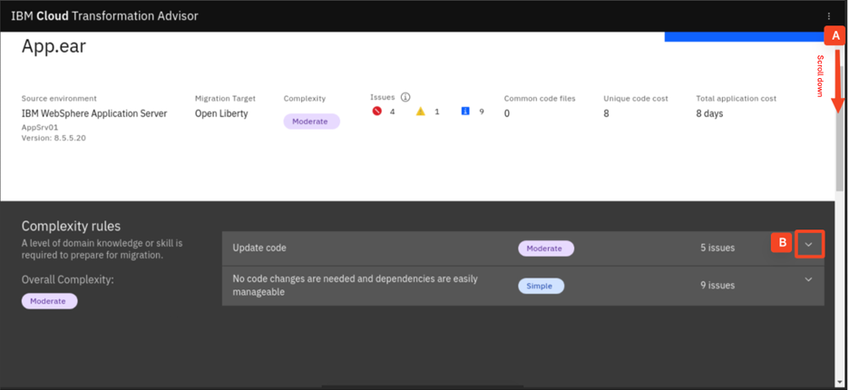
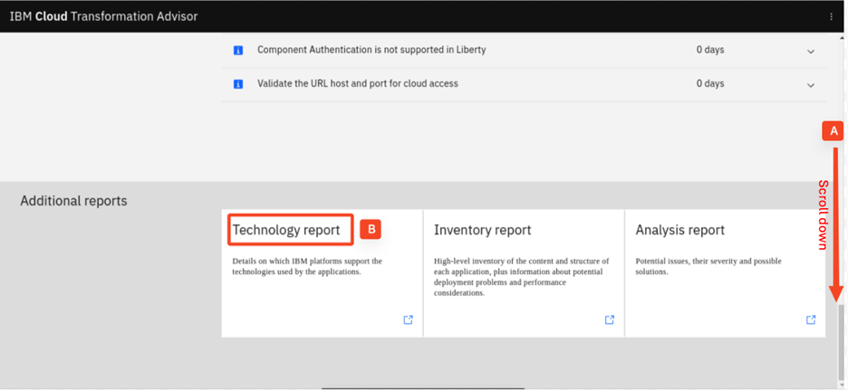
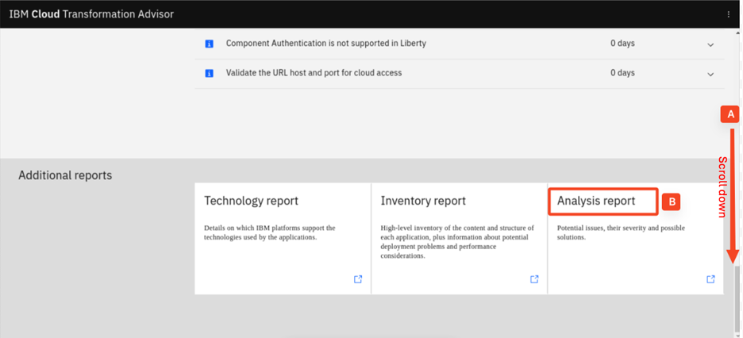
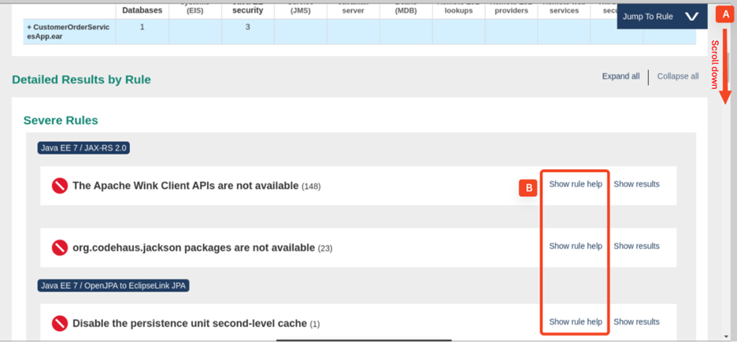
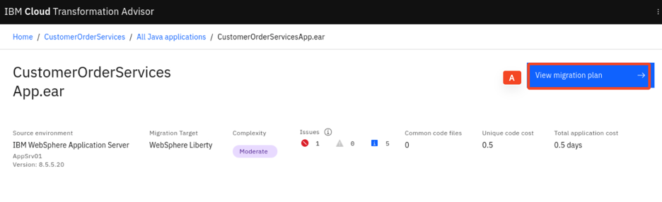
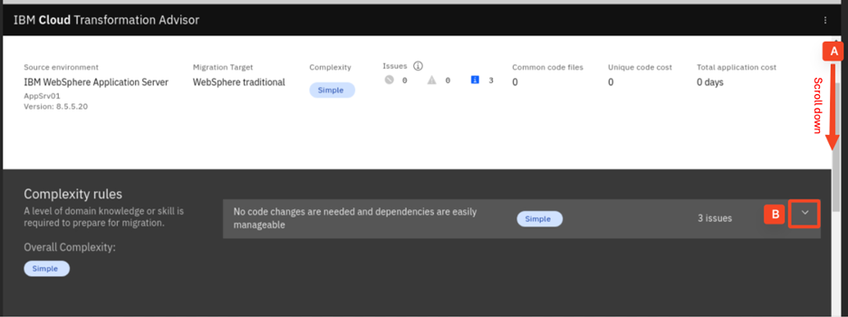

Transformation Advisor
Hands-on demo guide
1 Introduction
This demo shows the business value of IBM Cloud Transformation Advisor (Transformation Advisor), an application modernization tool included in IBM Cloud Pak for Applications to help clients quickly evaluate on-premises Java EE applications for deployment to the cloud.
Transformation Advisor can
- identify the Java EE programming models in the app.
- determine the complexity of apps by listing a high-level inventory of the content and structure of each app.
- highlight Java EE programming model and WebSphere API differences between the WebSphere profile types
- show any Java EE specification implementation differences that might affect the app
Additionally, Transformation Advisor provides a recommendation for the right-fit IBM WebSphere Application Server edition and offers advice, best practices and potential solutions to assess the ease of moving applications to Liberty or newer versions of WebSphere traditional.
Transformation Advisor accelerates application migrating to cloud process, minimize errors and risks and reduce time to market.
This demo has the following steps: 1. Create Transformation Advisor Workspace 2. Download the Data Collector 3. Review the command to run the Data Collector 4. Upload the Data Collector results 5. Analyze the recommendations 6. Summary
2 Access Transformation Advisor
Talking Points In the demo scenario, I am going to use Transformation Advisor to evaluate my migration effort in which I want to migrate our Customer Order Services application from traditional WebSphere V855 to the cloud-ready new runtime with minimal code changes. To use the Transformation Advisor (TA), I need to create a Workspace first. A Workspace is a designated area that houses the migration recommendations provided by Transformation Advisor against our application server environment. We can name and organize these however we want, whether it is by business application, location or teams. In the Transformation Advisor home page, I use Create new button to create a new Workspace. In this demo, I create a Workspace called CustomerOrderServices. |
-
If the Transformation Advisor is not started yet, start it by running the following scommands in a terminal window Otherwise skip this step.
a. Launch Transformation Advisor using the following commands:
cd /home/ibmdemo/TA_LOCAL/transformationAdvisor/transformation-advisor-local-3.2.1 ./launchTransformationAdvisor.shb. Type 5 and press Enter (A) to start the Transformation Advisor.

The Transformation Advisor is started after a few minutes.

Note: you might see an error message when launching the Transformation Advisor, just ignore it, because it will not impact the start of Transformation Advisor.
-
Access Transformation Advisor page from a web browser by clicking the TA Local (A) bookmark in the browser.

The Transformation Advisor page is displayed.
-
Create a workspace in Transformation Advisor by clicking Create new (A).
-
Type CustomerOrderServices (A) as the workspace name and click Create (B).
After the workspace created, the Transformation Advisor is ready to use as shown as the follows.
3 Download the Data Collector
Talking Points In the Transformation Advisor Workspace page, two utilities, Data Collector utility and Data Uploader utility, are listed. Transformation Advisor offers the Data Collector utility for getting the application data from the Java application server running in the client’s environment. This Java utility can be downloaded from the Transformation Advisor web page as we see here in our Workspace page. We can download and run this utility against our Java application server to collect all application data on the server. The utility can send the collected data directly back to TA, if TA is in the same network as the application server. It also saves the collected data in a zip file which can be uploaded to a remote TA using the Data Uploader utility. After the Workspace is created, I have options to either download the Data Collector utility or upload an existing data file. In this demo, I will first show how to use the Data Collector utility. First, I go to the download page. In the Download page, I can download different versions of the utility based on my application server operating system. The page also shows the information on how to use the utility in the command line to collect application data from WebSphere, WebLogic and Tomcat servers. I start to download the utility and save it in my local workstation. This result is a file with a name like transformationadvisor-Linux_CustomerOrderServices.tgz being downloaded and stored in the /home/ibmdemo/Downloads directory. Next, I copy the command for extracting the Data Collector tar file from the Transformation Advisor download page, navigate to the /home/ibmdemo/Downloads directory from the terminal window and paste/run the extracting command. The Data Collector is now extracted to the /home/ibmdemo/Downloads/transformationadvisor-2.4.4 directory. I can go to the directory with cd command. Now I am ready to run the Data Collector tool. |
-
Click Download (A).

-
Click Download for Linux (A).

The transformationadvisor-Linux_CustomerOrderServices.tgz file is downloaded to the /home/ibmdemo/Downloads directory.
-
Scroll down (A) to the Install section and click Copy (B) icon to copy the install tar command.
-
From the terminal window, run the following command to navigate to the /home/ibmdemo/Downloads directory:
cd /home/ibmdemo/Downloads -
Right click, select Paste (A) to paste the command you copied, and Press Enter to run the command.
This will extract the Transformation Advisor Data Collector utility to the /home/ibmdemo/Downloads/transformationadvisor-3.2.1 directory.
4 Review the command to run the Data Collector
Talking Points Now the Data Collector is installed. I can run the Data Collector against my application server. The Transformation Advisor Data Collector Download page provides detail information on how to run the tool. Transformation Advisor Data Collector can collect data from different application server runtimes, including WebSphere, WebLogic, JBoss, Tomcat and MQ. Transformation Advisor Data Collector can also narrow the analysis scope at different levels, either on application and configuration, or on application only or on ear/war files. |
-
Go back to Transformation Advisor Data Collector Download page.
-
Scroll down to the Run Tool section (A) and click the Domain dropdown menu (B) to view different application runtimes that the Transformation Advisor can analysis of.
The list of the application runtimes is displayed.

-
Click the App & Configuration dropdown menu (A) to view different analysis scopes of the Transformation Advisor.
5 Upload the Data Collector results
Talking Points Transformation Advisor is updated on a regular base to include findings from the field. In addition, Liberty also gets more and more capabilities to ease the migration. Therefore, it is always good to use the latest Transformation Advisor collector create a new workspace. But the execution of the collector can take some time to create the zip file. In this demo, I have a pre-created Data Collector zip file, now I need to upload it to Transformation Advisor for analysis. To do it, I first launch the Transformation Advisor Upload utility to add the file. Next, I use the utility file explorer to navigate to the desktop folder /home/ibmdemo/openshift-workshop-was/labs/Openshift/TransformationAdvisor where the zip file is stored. Then I select the zip file and upload it to Transformation Advisor. After a few moments the upload of the data collector results will be completed. Once the Data Collector Results have been uploaded to Transformation Advisor, a set of recommendations will be created and shown on the Recommendations page as shown in the screenshot below. |
-
From the top of the Data collector page, click the Workload type (A).

-
Scroll down (A) and click the Upload (B).

-
Click the Drop or add file (A).

-
Navigate to the Home > ibmdemo > openshift-workshop-was > labs > Openshift > TransformationAdvisor folder and double-click the AppSrv01.zip (A) file.
-
Click the Upload (A).
After the Data Collector Results have been uploaded to Transformation Advisor, a set of recommendations will be created and shown on the Recommendations page as shown in the screenshot below.

6 Add Open Liberty as another migration target
Talking Points On the Recommendations page, the target environment is set to Liberty Runtimes, which is the default target environment. The Recommendations page also shows the summary analysis results for all the apps in the AppSrv01 environment to be moved to a Liberty environment. For each app, you can see these results:
For example, if we want to move the modresorts application to a Liberty runtime, the complexity level is Simple, which indicates that the application code does not need to be changed before it can be moved to Liberty. The estimated development effort is zero day because no code change is required. Transformation Advisor can provide recommendations for different targets at the same time. I will add Open Liberty as another migration target to demonstrate it. |
-
Click Migration targets dropdown menu (A), check the Open Liberty box (B) and close the dropdown menu.
The Transformation Advisor recommendations for both migration targets are now listed.
7 Analyze the recommendations for Open Liberty
Talking Points Let’s focus on the Transformation Advisor recommendations for the Customer Order Services (CustomerOrderServicesApp.ear) application. Transformation Advisor estimates that the effort to move the Customer Order Services application from traditional WebSphere V855 to Open Liberty (which supports JEE7, Java EE 8 and more) will take 8 days of the development time. Let’s look at the analysis details for the Customer Order Services application on Open Liberty. First, we want to review the analysis results in the Complexity Rules section. As we can see, Transformation Advisor has determined that code changes may be required before this application will run on Open Liberty. Next, we move to the Issues details section. We can see that Transformation Advisor has detected a critical technology issue with accessing the Apache Wink APIs as well as several issues around JPA. In the section about External dependencies, we can see that the application requires access to a database and to Java EE security. In the bottom section of the details page, Transformation Advisor provides three reports with more analysis results, including:
In this demo, we first take a look at the Technology Report, which lists all Java technologies the application used and whether these technologies are supported by a specific runtime from Open Liberty to WebSphere traditional for z/OS. The information is used to determine whether a particular WebSphere product is suitable for the application analyzed. Then, we look at the Inventory Report, which gives us insight about the application structure, potential deployment problems and more. Finally, we look at the Analysis Report. The report shows the results of the migration rules that were executed by the Data Collector and returned results. Let’s go to the Severe Rules section and review the Show rule help details. The Rule Help section provides recommended solutions on how to fix the issues. In this section, several recommendations are listed:
|
-
Click the CustomerOrderServicesApp.ear (A) application name on the Open Liberty row.
-
Scroll down (A) to the Complexity Rules section and expand (B) the Update code section to review the identified code change related issues.

The code change related issues are shown.
-
Scroll down (A) to the Issues details section and expand (B) the Technology issues as well as the External dependencies and Additional information sections to review the efforts needed to address the issues.
-
Scroll down (A) to the bottom of the analysis page and click the Technology Report (B) to open the Technology report in a new browser window and review it.

The Application Technology Evaluation Report is opened in a new browser window.
-
Go back to the Transformation Advisor page, scroll down (A) to the bottom of the analysis page and click on the Inventory Report (A) link to open the Inventory report in a new browser window and review it.
-
Go back to the Transformation Advisor page, scroll down (A) to the bottom of the analysis page and lick on the Analysis Report (A) link to open the Analysis report in a new browser window and review it.

-
In the Analysis Report page, scroll down (A) to the Severe Rules section and click on the Show rule help (B) link of each rule to review the recommended solutions for the issues.

8 Analyze the recommendations for WebSphere Liberty
Talking Points Let’s focus on the Transformation Advisor recommendations for the Customer Order Services (CustomerOrderServicesApp.ear) application in context of WebSphere Liberty. Transformation Advisor estimates that the effort to move the Customer Order Services application from traditional WebSphere V855 to WebSphere Liberty (which supports JEE6 partly, Java EE 7 and 8 and more) will take 0.5 days of the development time. Let’s look at the analysis details for the Customer Order Services application to see why there are less migration efforts for WebSphere Liberty than for Open Liberty. First, we want to review the analysis results in Complexity Rules section. As we can see, Transformation Advisor has determined that code changes may be required before this application will run on WebSphere Liberty. But if we move to the Issues details section, we can see that Transformation Advisor has detected only a critical technology issue with accessing the Apache Wink APIs. There are no issues regarding JPA, because WebSphere Liberty other than Open liberty also supports JPA 2.0 and therefore Open JPA. WebSphere Liberty and Open Liberty, but the Technology Report is different. Therefore, let’s take a look at the Analysis Report. The report shows the results of the migration rules that were executed by the Data Collector and returned results. Let’s go to the Severe Rules section and review the Show rule help details. The Rule Help section provides recommended solutions on how to fix the issue. In this section, there is only one recommendation listed:
|
-
Go back to the top of the Customer Order Services application on Open Liberty page and click All Java applications (A) link.

-
Click the CustomerOrderServicesApp.ear (A) application name on the WebSphere Liberty row.
-
Scroll down (A) to the Complexity Rules section and click to expand the Update code (B) section.
You see now there is only one issue related the code update when moving the application to WebSphere Liberty.
-
Scroll down (A) to the Issues details section and expand (B) the Technology issues as well as the External dependencies and Additional information sections to review the efforts needed to address the issues.
-
Scroll down (A) to the bottom of the analysis page and click the Analysis Report (B) link to open the Analysis report in a new browser window and review it.
-
In the Analysis Report page. Scroll down (A) to the Severe Rules section and click Show rule help(B) to expand and review the recommended solution for the issue.
9 Demonstrate the migration assets
Talking Points Next to recommendations how to migrate the application, Transformation Advisor also provides assets to speed up the deployment by providing a migration plan. This includes the generation of the Liberty configuration file server.xml to deploy the application to Liberty, a pom file to build the application, a Docker file to containerize the application and an Application Custom Resource to deploy the application to Kubernetes. Let’s start with the Liberty configuration. Based on the analysis of the application ear, Transformation Advisor generates the list of features required by the application. As the collector not only analyzed the application but also the configuration, it also generates the Liberty configuration definition for the datasource. To make the application configuration portable, Transformation Advisor uses environment variables for many parts of the configuration. It injects the values retrieved from the current environment. As Transformation Advisor does not collect any passwords, the variables for the data source as well as for the keystores do not contain any credentials. |
-
Go back to the Transformation Advisor page, scroll to the top and click the View migration plan (A).

The Migration plan is displayed. It has all files which can help you migrate to IBM WebSphere Liberty, create an image, and package your application as a Kubernetes Operator for easy deployment.
-
Click the server.xml (A) to look at its details.
-
The server.xml file is downloaded to the /home/ibmdemo/Downloads directory, and it is shown in the bottom left corner of the web browser. Double-click server.xml (A) to open it in the text editor.
-
In the text editor, scroll to the Feature section of the server.xml file, and review its contents.
-
Scroll to the Data Source section and review its contents.
-
Scroll to the Variables section and review its contents.
-
Close the text editor.
10 Explain the benefits of Transformation Advisor to containerize based traditional WAS
Talking Points For the customerorderservice application, the migration to WebSphere Liberty seems to be quite easy. But there might be reasons why to stick with WebSphere traditional and just containerize the application. Transformation Advisor provides insight to assess the efforts for a migration to WebSphere traditional v9 container and provides a similar set of reports as for Liberty. In addition, Transformation Advisor provides assets to deploy the application into WAS traditional v9 container, for example the Python scripts to configure WAS traditional and to deploy the application, a Dockerfile to deploy the application into WAS traditional in a container as well as Pipeline resources. |
-
Go back to the Transformation Advisor Recommendation page, click the All Java applications (A) link.
-
Click to expand Migration targets dropdown menu (A), add WebSphere traditional as the migration target (B) and close the dropdown menu.
-
Click the CustomerOrderServicesApp.ear (A) application name on the WebSphere traditional row.
-
Scroll down (A) to the Complexity Rules section and expand (B) the section to review the contents.

-
Scroll to the bottom of the analysis page to show that there are reports also for WebSphere traditional.
-
Scroll up to the top of the page and click the View migration plan (A) button.
-
Review the migration files generated by Transformation Advisor.
11 Summary
In this demo, I showed how to evaluate the existing Java application using IBM Cloud Transformation Advisor. The intention of our traditional WebSphere V855 to Liberty scenario is to migrate the Customer Order Services application to the cloud-ready new runtime with minimal code changes. IBM Cloud Transformation Advisor was used to analyze the application for compatibility with traditional WebSphere and determined that only small changes to three classes would be required. It provided next to insight into the application and also several deployment assets.
As the demo shown, Transformation Advisor can help to accelerate application migrating to cloud processes, minimize errors and risks and reduce time to market.